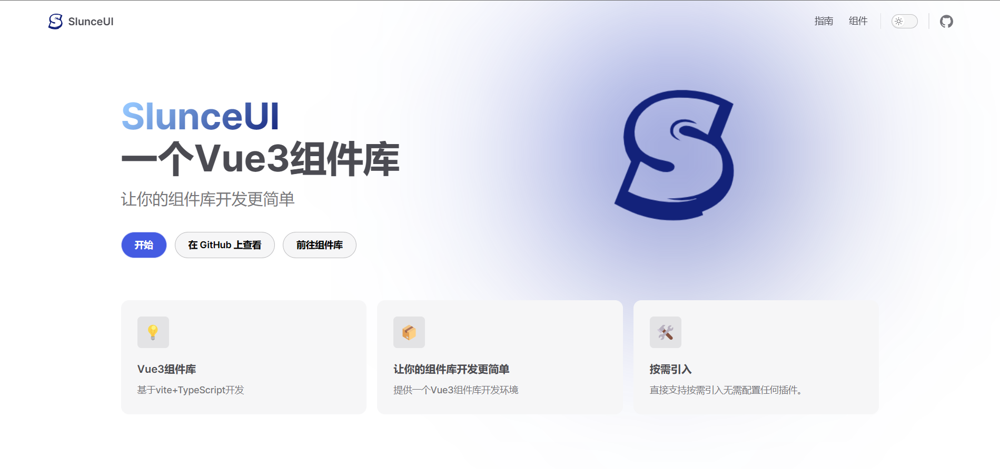
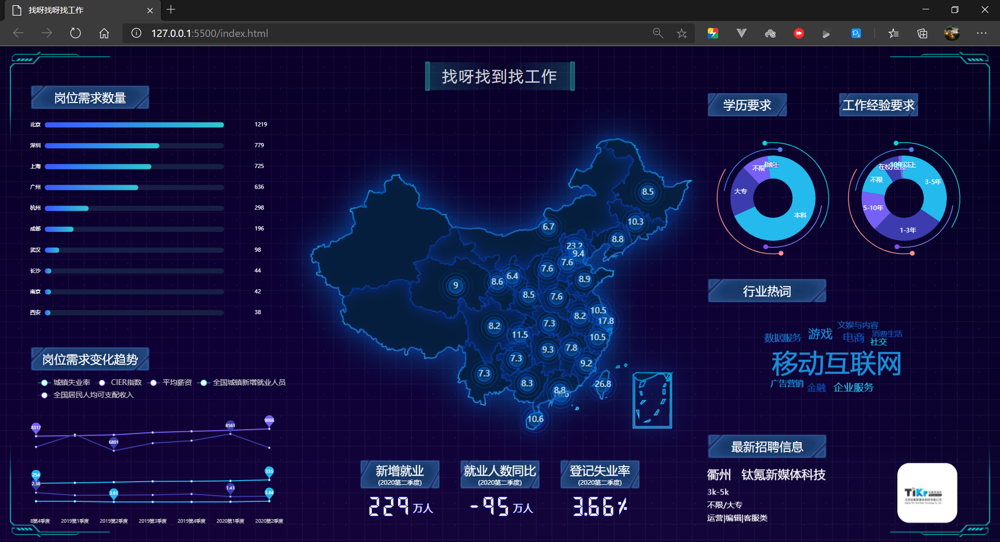
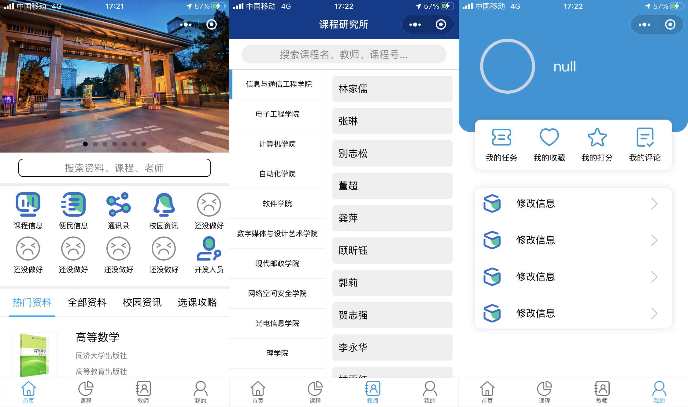
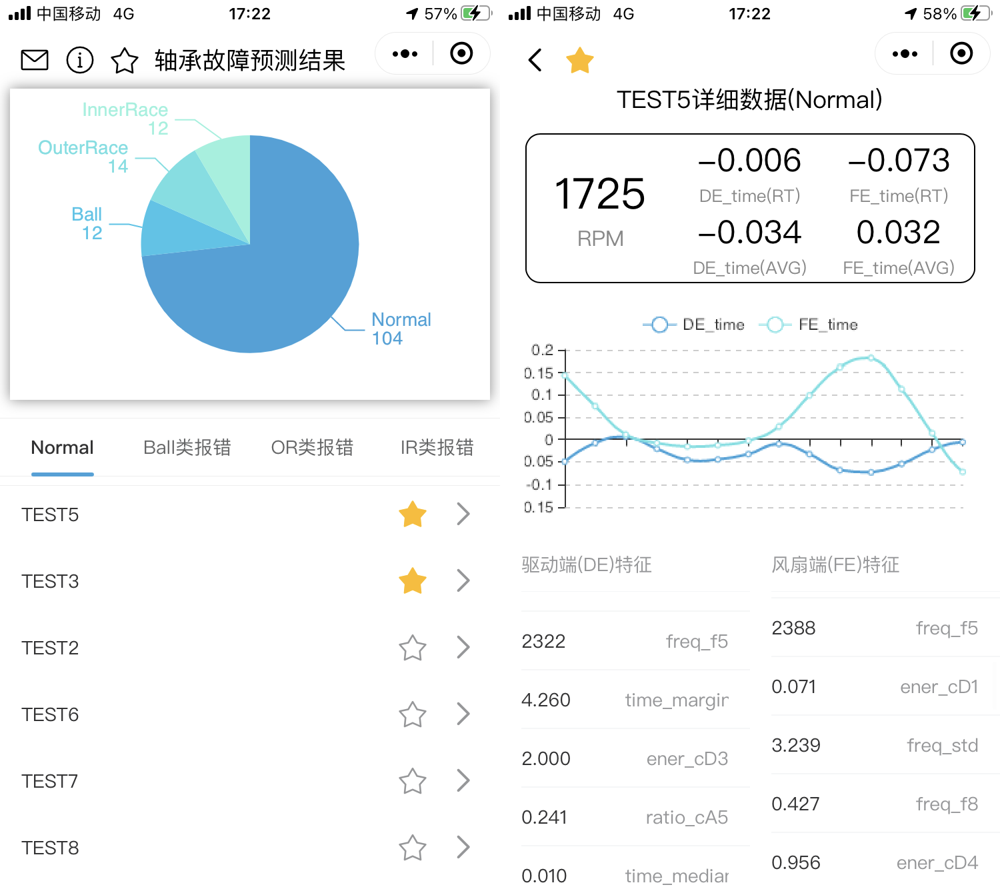

VueVue-组件库 官方文档：SlunceUI。  Vue-音乐播放器 WEB 微信小程序小程序-选课宝 小程序-轴承故障预测 客户端 文章作者: Vychod Li文章链接: https://vychodlc.github.io/2020/10/22/works/版权声明: 本博客所有文章除特别声明外，均采用 CC BY-NC-SA 4.0 许可协议。转载请注明来自 Vychod Blog！上一篇2020 - 1024 = 996